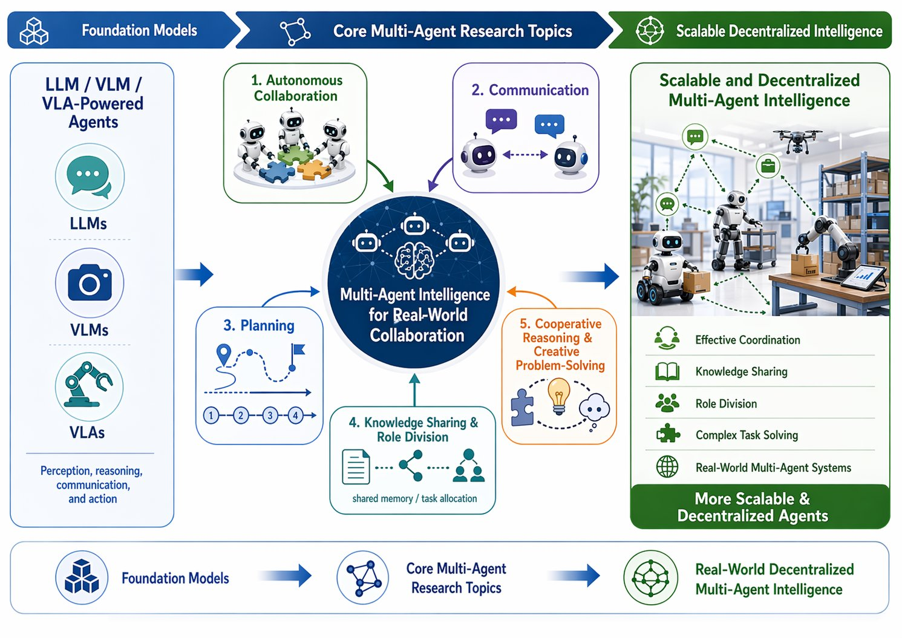

01 / Multi-Agent Systems
Multi-Agent Systems
Collaborative, communicative, and goal-driven intelligence for multi-agent systems.
We investigate autonomous collaboration, communication, and planning in multi-agent systems powered by LLMs, VLMs, and VLAs. Our research aims to develop agents that can coordinate effectively, share knowledge, divide roles, and solve complex tasks through cooperative reasoning. We are particularly interested in scalable and decentralized multi-agent intelligence for real-world environments.
- multi-agent collaboration
- communication
- planning
- decentralized intelligence